4,521 works across 18 research areas, classified by SPECTER2 embeddings. Citations are a present-day snapshot from Semantic Scholar. Back to the terrain.
Citation distribution
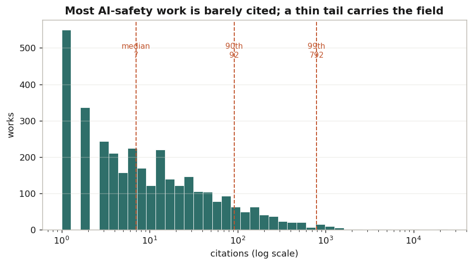
3,385 works with at least one citation (1,136 with none). Median 7, 90th percentile 92, 99th 792 — the top 1% of works hold 41% of all citations.
Citations by area
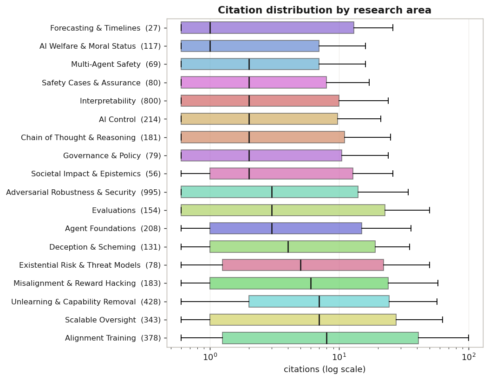
Box shows the interquartile range, line the median, count in brackets. Areas differ far more in volume than in typical per-work impact.
Distinctive vocabulary
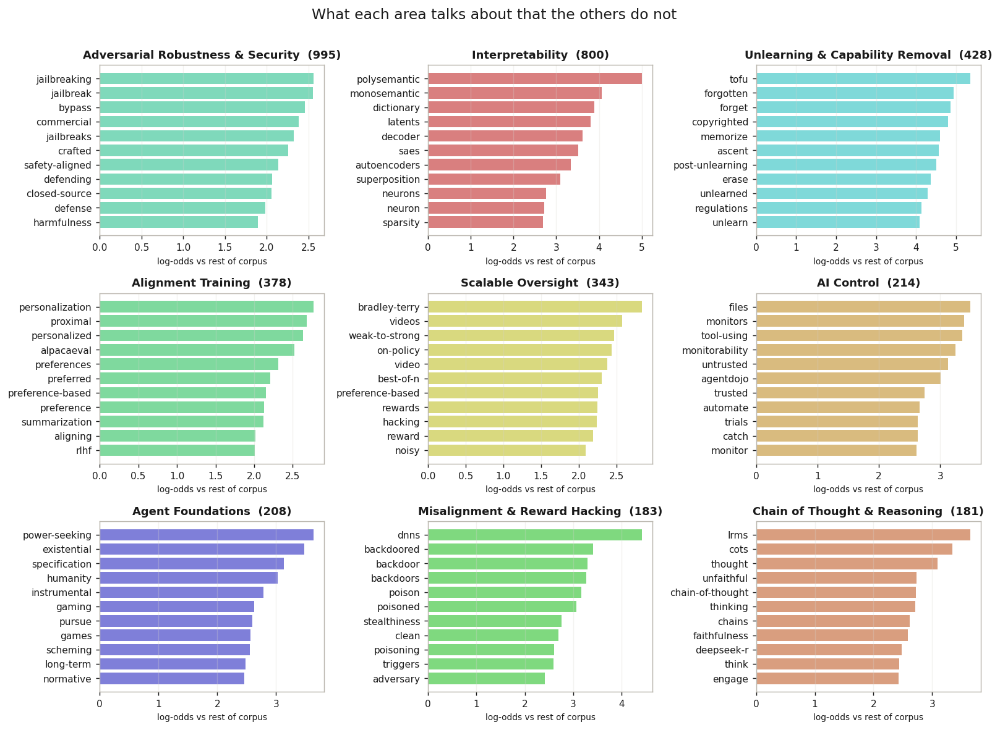
Log-odds of each word appearing in this area versus the rest of the corpus. High bars are terms of art; their absence would mean an area is not distinctive.
Growth over time
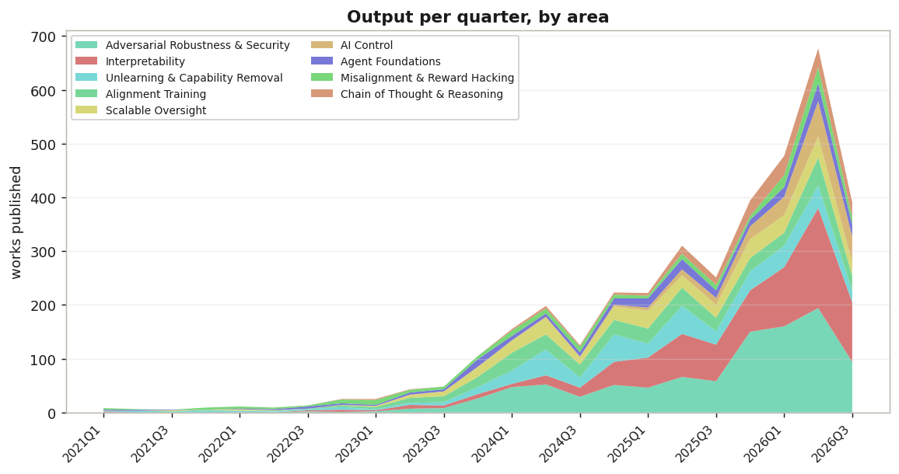
Counted by publication quarter. The dip in the most recent quarters is indexing lag, not a decline — very recent work has not all been picked up yet.
Impact concentration
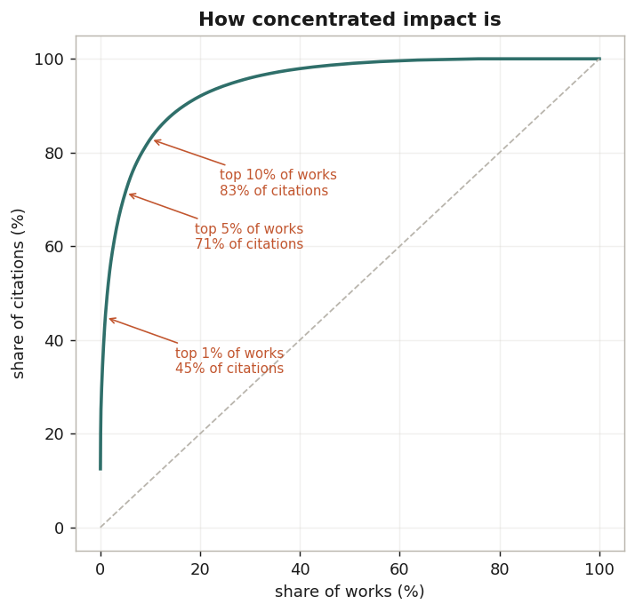
Lorenz curve of citations. Gini 0.89 — a value near 1 means a handful of works account for almost everything, which is the normal shape for citation data.
Area overlap
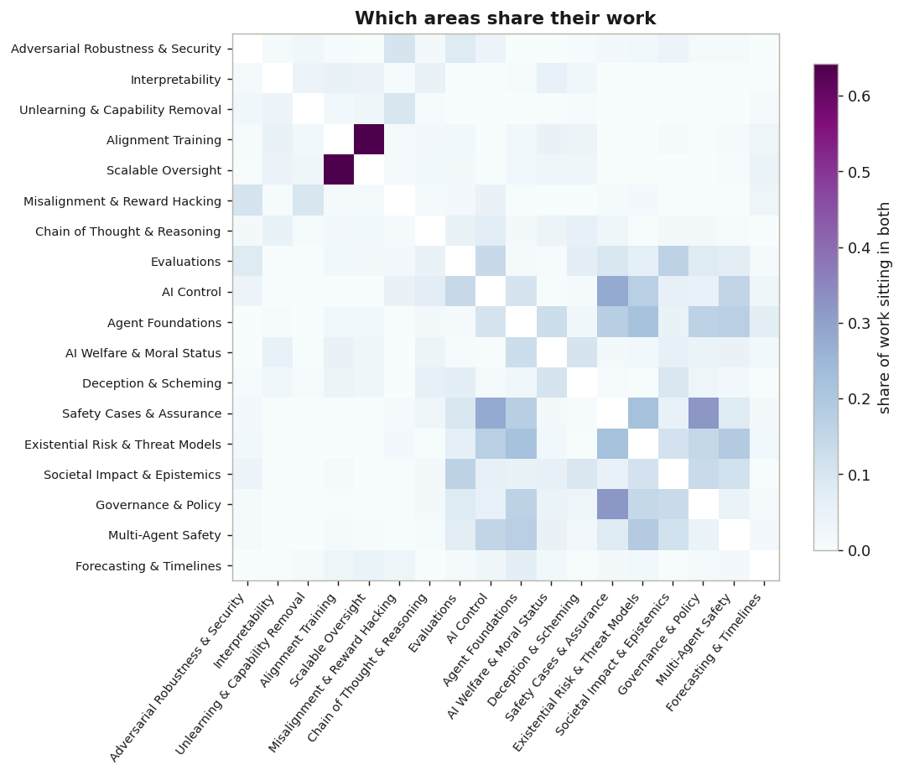
Jaccard overlap on the soft area assignments. Ordered by size; the diagonal is blanked.
Citations by publication quarter
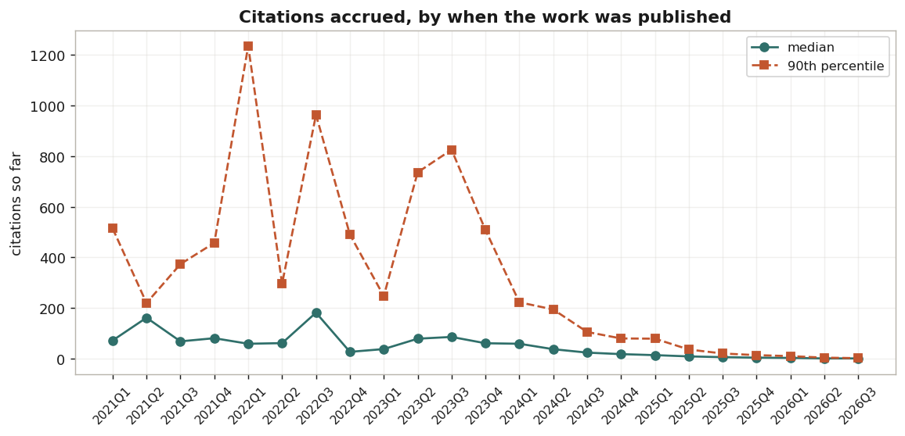
Older work has had longer to accumulate, so the downward slope is age, not quality. This is the curve that any 'most cited' ranking is quietly fighting.
Venue mix by area
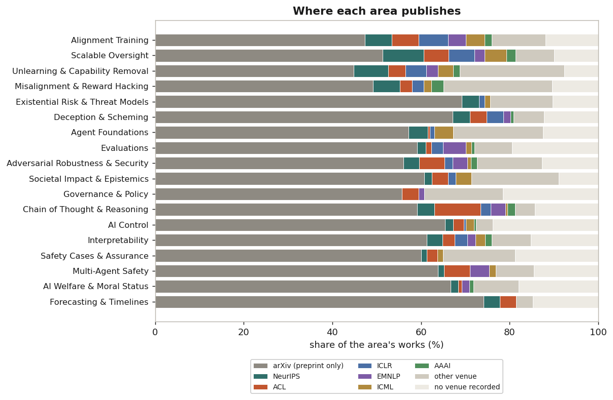
Areas are in the same order as the previous chart. The grey bar on the left is work that exists only as an arXiv preprint; areas dominated by it are moving faster than peer review, or are not aimed at it.
Researchers: output vs reach
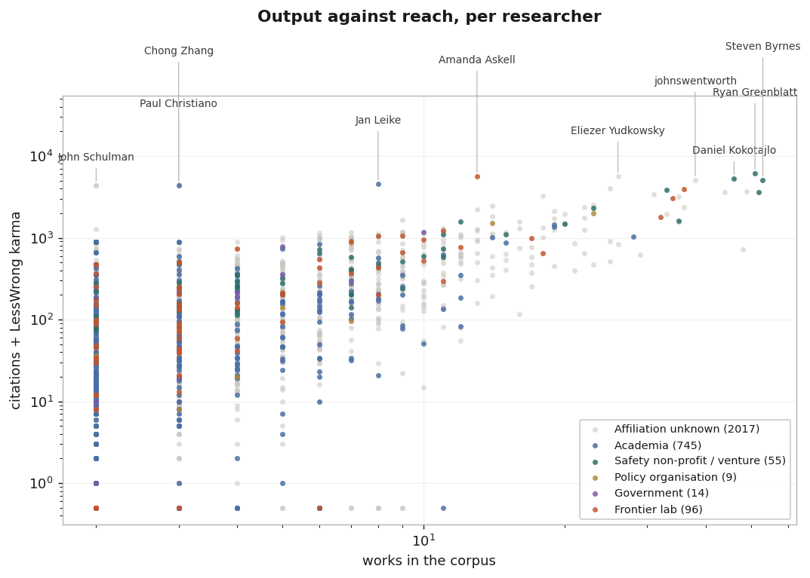
Both axes are logarithmic. Citations and karma are summed only to place people on one chart — they are not comparable units. Affiliation is missing for most people, so the grey cloud is not a finding about independents.
Entry cohorts
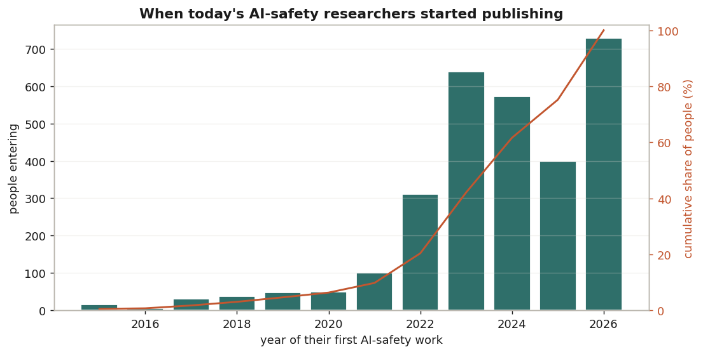
Half of the 2,936 people in this dataset published their first AI-safety work in 2024 or later — it measures entry into safety, not the start of a research career. 2026 is not a full year and 2025 dips against its neighbours; treat the last three bars as one plateau rather than reading a trend into them.
Papers vs forum posts
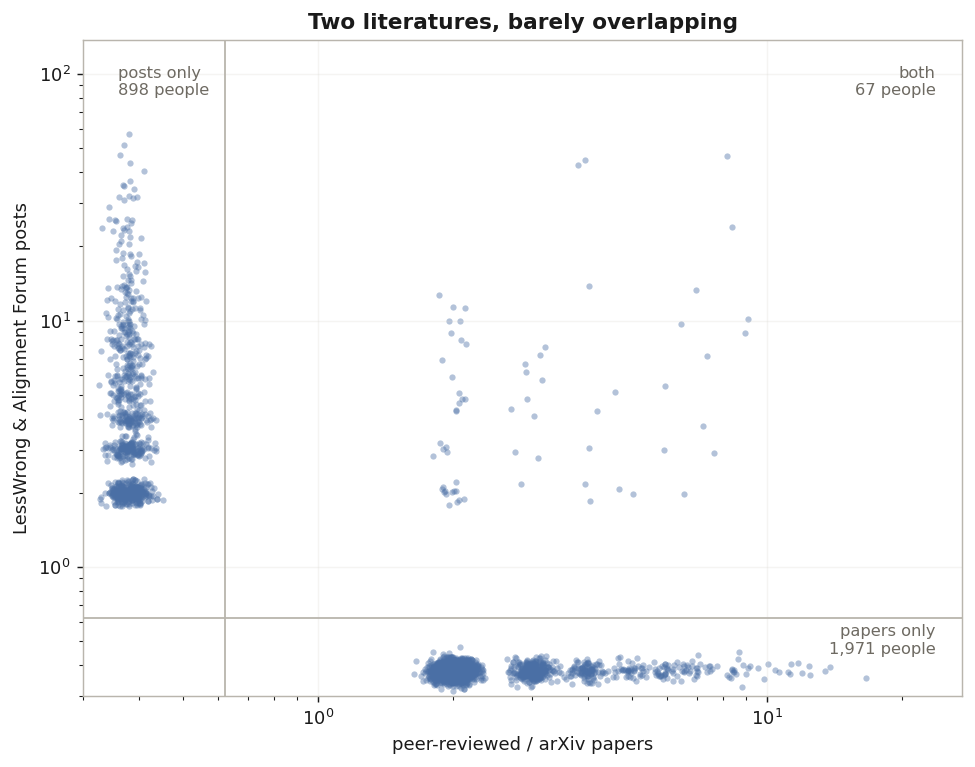
Each dot is one person; the axis floor is 'none'. Only 67 of 2,936 people write in both registers. The terrain map is built from papers alone, because Semantic Scholar does not index forum posts — this chart is the size of what that omits.